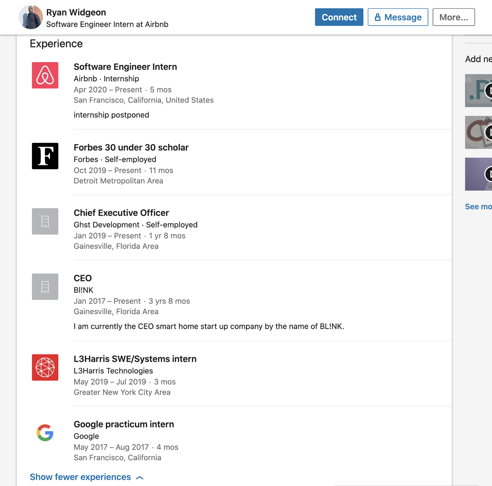
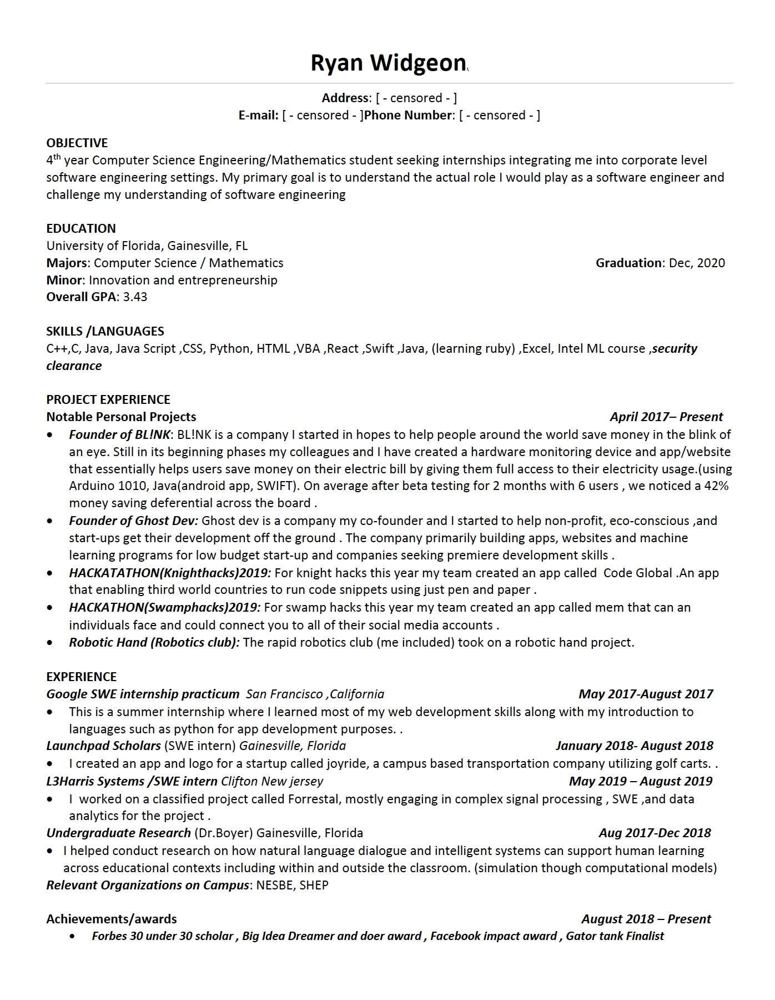

Picture of Ryan
Why am I writing this?
To expose Ryan Widgeon and the flaws in the practices that companies
use. Ryan Widgeon and his actions diminishes all the work that another
person has done to achieve the same feat. The fact that he’s actually
incapable of doing the work is what makes it even worse. I’m also
disgusted by the lack of responsibility taken by Google, Facebook, and
Airbnb.
Lying on your resume
You’ve always heard the stories about how you should never lie on your
resume. You’ll be found out. That turns out to be a lie (with
exceptions)!
You can’t lie about easily verifiable information such as a college
degrees. So what do you lie about? Past employer history. It turns out
it’s hard to coerce this information from previous employers due to
privacy issues.
How do I know this? Well….Ryan Widgeon submitted his resume with a
Google Practicum (now STEP) internship listed to both Facebook and
Airbnb. Did he work at Google? No!
I have reasonable doubt that he did not work at Google. A couple
of friends who work at Google could not find any internal project
documentation or presence of him working there. To add to that he’s told
various people different things. For example, Ryan Widgeon would tell a
person that he interned at Google Flights, then tell another person that
he was doing a scholarship program for Google. A recruiter also revealed
to me that Google Flights has never had an intern.
Another piece of evidence is that he actually was in school at the time
taking PHY2048 - Physics 1 in person. So there was no possible way for
him to be at the Google campus and school at the same time!
This all isn’t substantial proof, so I contacted a recruiter and HR at
Google in an attempt to verify this information. I received a response
that stated for privacy reasons that they aren’t able to disclose this
information. I then replied asking that they at least take action on
that information and inform Ryan to at least remove it from his LinkedIn
profile. They again said that they are unable to take action.

Screenshot of Ryan's LinkedIn

Screenshot of Ryan's censored resume
Convince someone to do your Facebook/Airbnb interview
Knowing Ryan Widgeon personally, I know for a fact that he could not
pass Google, Facebook, and Airbnb interviews. When Ryan Widgeon revealed
that he was going to be interning at Airbnb and Facebook, I was
absolutely shocked and believed for a minute that he was not as
technically challenged as I thought he was. This was all until an
acquittance of mine revealed that he was the one that did the interviews
for Ryan Widgeon. This person in question was in a dark place at the
time and sought friendship through Ryan Widgeon. Although this does not
justify my acquittance’s actions, I thought some context should be
given. Ryan Widgeon exploited this “friendship” and convinced him to do
his interview.
This was reported to Airbnb and Facebook.
No action was taken by either company because there was “not enough
evidence”. This was due to the fact that interviews are not recorded and
that they don’t require candidates to have their webcam on when
interviewing.
Facebook even stated that Ryan Widgeon would come out in the wash by
the end of the internship and be caught in his inability to perform.
However, that misses the point and that Ryan Widgeon would still
ultimately benefit from having Facebook or Airbnb’s brand on his
resume.
And what’s to say that he couldn’t “convince” another person to write
the code during his internship for a cut of the money to get a return
offer. The amount that an intern at Facebook makes is not little either.
Interns at Facebook make $24,000 for the length of their internship (12
weeks). This doesn’t include the corporate housing / housing stipend
that Facebook provides too.
Conclusion
This ultimately boils down to companies inability to verify past
employment history (maybe limited to internships) and not verifying a
candidate during an interview. This allows these malicious acts to take
place and takes away opportunities from other candidates that deserve
it.
Although I am unable to provide strong evidence against Ryan Widgeon, I
am telling this story in the hopes that companies improve their
recruiting processes and actually take actions against these
individuals.
Ryan's LinkedIn
Ryan Widgeon - Software Engineer Intern - Airbnb | LinkedIn
View Ryan Widgeon's profile on LinkedIn, the world's largest
professional community. Ryan has 6 jobs listed on their…
www.linkedin.com